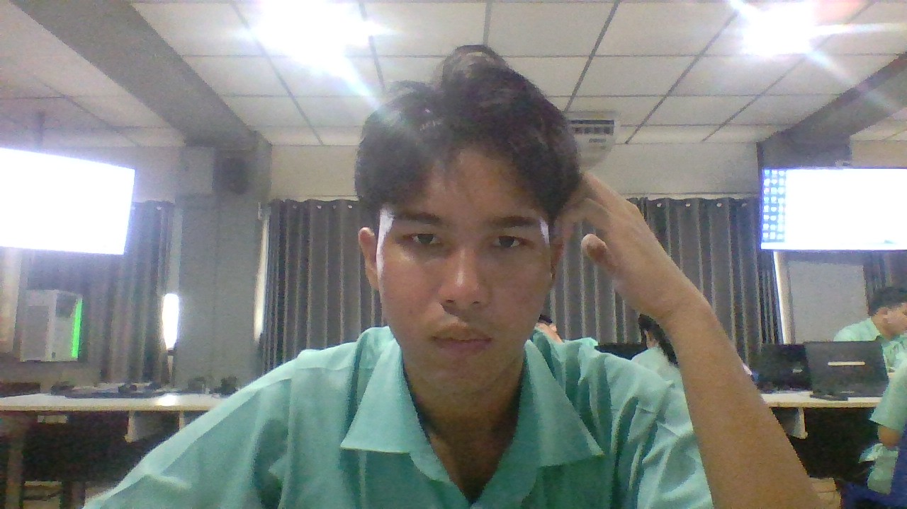

📁 แฟ้มสะสมงาน
(Portfolio)
นายธนโชติ วรรณวิสิทธิ์

💻 1. งานวิทยาศาสตร์

รายละเอียดชิ้นงาน:
เป็นวิทยากรจัดแสดงนิทรรศการวิทยาศาสตร์และเทคโนโลยี เนื่องในงานวันวิทยาศาสตร์แห่งชาติ ประจำปีการศึกษา ๒๕๖๙
สิ่งที่ได้เรียนรู้: การเป็นวิทยากรในกิจกรรมวันวิทยาศาสตร์ทำให้ได้รับความรู้ และประสบการณ์หลายด้าน ทั้งด้านการสื่อสาร การทำงานร่วมกับผู้อื่น และการถ่ายทอดความรู้ให้ผู้เข้าร่วมกิจกรรม รวมถึงได้ฝึกการพูดต่อหน้าผู้คน
⚽ 2. ผลงานด้านคุณธรรม

รายละเอียดกิจกรรม:
การแข่งขันฟุตบอล ๗ คน ต้านภัยยาเสพติด ระดับชั้นมัธยมศึกษาตอนปลาย เนื่องในกิจกรรมวันต่อต้านยาเสพติดโลก ประจำปี ๒๕๖๙
ประโยชน์/ข้อคิด: ได้เรียนรู้ถึงโทษและผลกระทบของยาเสพติด ฝึกความรับผิดชอบ มีระเบียบวินัย รู้จักการทำงานร่วมกับผู้อื่น และตระหนักถึงการใช้ชีวิตอย่างปลอดภัยและห่างไกลยาเสพติด
🎊 3. กิจกรรมค่ายเทคโนโลยี

รายละเอียดกิจกรรม:
ได้เข้าร่วมกิจกรรม “ค่ายยกระดับผลสัมฤทธิ์ทางการเรียนเทคโนโลยี” เพื่อพัฒนาความรู้และทักษะด้านเทคโนโลยี ผ่านกิจกรรมเสริมความรู้และทักษะ ที่สอดคล้องกับเนื้อหาของหลักสูตร
สิ่งที่ได้เรียนรู้: ได้เพิ่มพูนความรู้และทักษะด้านเทคโนโลยี ได้เรียนรู้การประยุกต์ใช้เทคโนโลยีในการแก้ปัญหา พัฒนาทักษะการคิดวิเคราะห์และการแก้ปัญหา และได้ฝึกปฏิบัตินำความรู้จากบทเรียนมาใช้จริง
🛠️ 4. ทักษะที่มี
🚀 5. เป้าหมายในอนาคต
พัฒนาความรู้และความสามารถเพื่อนำไปต่อยอดในการศึกษาต่อและการทำงานในอนาคต
มีเป้าหมายศึกษาต่อใน คณะวิศวกรรมศาสตร์